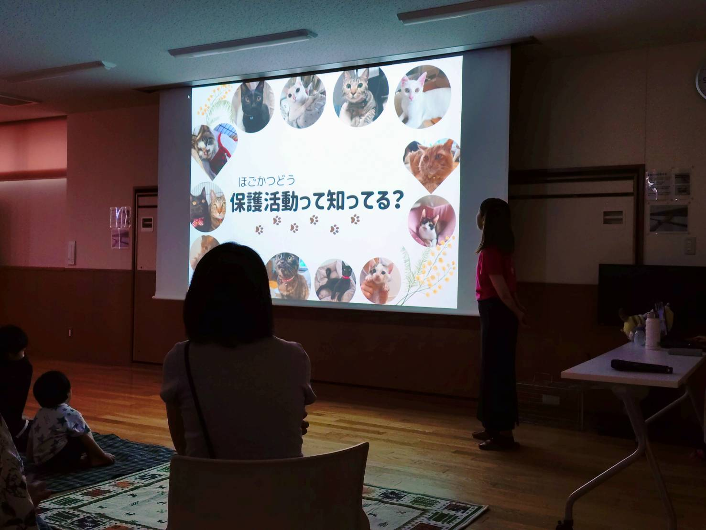
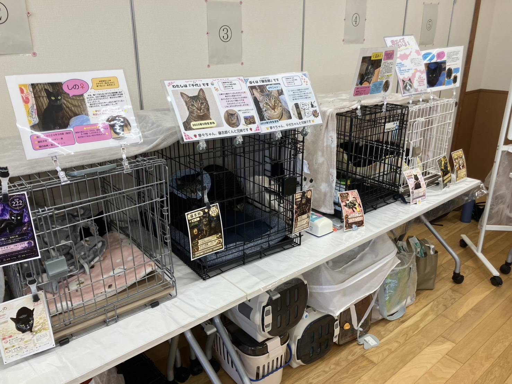
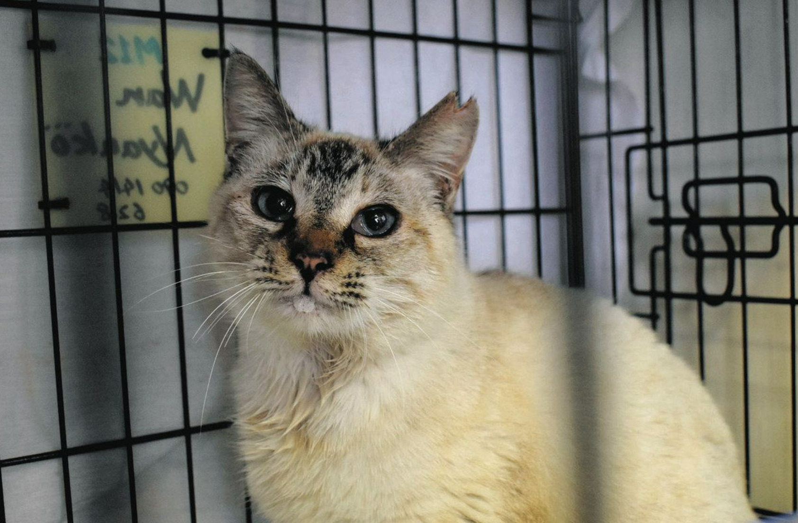

応援・ご支援のお願い
アイ愛クラブを応援する
活動の様子はInstagramでも発信しています。物資のご支援もお待ちしています。
『動物も人も幸せに暮らせるまちづくり』をめざして
三重県津市を拠点に活動しています。



地域で暮らす野良猫を増やさないために、自ら捕獲・不妊去勢手術・地域へ戻す TNR活動を継続的に行っています。これにより、不幸な命が生まれることを防ぎ、 人と猫がともに暮らしやすい地域環境づくりに取り組んでいます。
三重県や津市の行政機関と連携を図りながら、地域の動物愛護に関する課題について 情報共有や提言を行っています。行政・団体・住民が一体となって取り組むことで、 より良い仕組みづくりを目指しています。
活動の様子はInstagramでも発信しています。物資のご支援もお待ちしています。